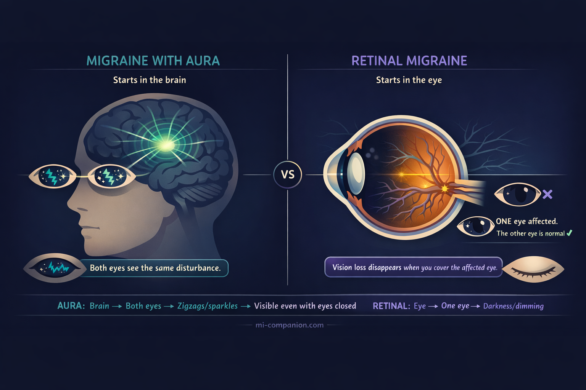
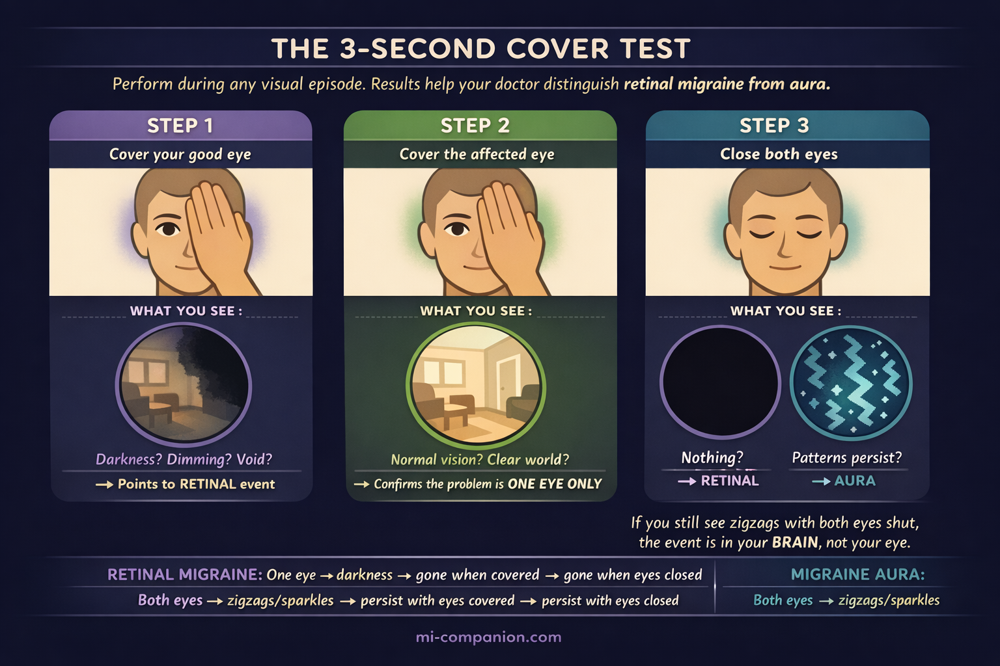

By Rustam Iuldashov
30 years lived experience with chronic migraine | Sources: 24 peer-reviewed references including Cephalalgia (n=46), Current Neurology and Neuroscience Reports (n=12), Naunyn-Schmiedeberg’s Archives of Pharmacology (n=40 trials) | Last updated: March 2026
Medical Review: This content is based on 24 peer-reviewed sources including Cephalalgia, Vision, Current Neurology and Neuroscience Reports, Canadian Journal of Ophthalmology, Journal of Neuro-Ophthalmology, Naunyn-Schmiedeberg’s Archives of Pharmacology, and other authoritative journals.
Important Notice: This article is for informational purposes only and does not replace professional medical advice. If you experience sudden vision loss in one eye, seek emergency medical attention immediately.
Key Takeaways
- Retinal migraine affects one eye. Aura affects both. This single distinction changes your diagnosis, treatment, risk profile, and what medications are safe. [1][2]
- Both eyes shimmering? Breathe. That’s classic aura — not retinal migraine. Very different condition, very different risk level. [2][4]
- The cover test takes three seconds and changes everything. During any visual episode, cover each eye separately and note what happens. Hand that information to your doctor. [2][7]
- Triptans, ergots, and beta-blockers are dangerous for retinal migraine. These vasoconstricting medications can worsen the spasm and increase the risk of permanent damage. [5][18]
- Permanent vision loss is rare — but the risk is not zero. Each episode is a period of blood flow deprivation. Subclinical damage can accumulate silently. [10][22]
- First-time monocular vision loss is always an emergency. It could be retinal migraine, a stroke, retinal detachment, or artery occlusion. Let a doctor decide. [1][5]
- Your diary is your protection. Track which eye, what you saw, how long it lasted, the cover test results, and what triggered it. Patterns save eyes. [5]
You’re at your desk when your left eye goes dark. Not sparkly. Not zigzaggy. Dark — like someone pressed a dimmer switch from the inside. You blink. Nothing. You cover your right eye, and the world disappears.
“I was sure I was having a stroke,” wrote one patient (Anna, 34) in a migraine support group. “I ran to the bathroom mirror to check if my face was drooping.” Another (Mark, 29): “My GP told me it was ‘just an aura.’ But I know my aura — I’ve had the zigzag lines for years. This was completely different. This was blindness.”
They are both describing retinal migraine. And they are both right to be alarmed — because retinal migraine is not what most people think it is, and the confusion that surrounds it can delay proper diagnosis by years.
The Name That Keeps Lying to You
Search “ocular migraine” and you’ll find chaos. The term gets thrown at three different conditions: migraine with visual aura (the classic zigzag lines), retinal migraine (actual vision loss in one eye), and even “silent migraine” with visual symptoms but no headache. [1] Many doctors — including some neurologists who should know better — use these labels interchangeably. [2]
This is not a semantic problem. It is a safety problem. Because these conditions have different origins, different risks, and critically different treatments.
Migraine with aura starts in the brain. A slow wave of electrical silence called cortical spreading depolarization rolls across the visual cortex. [3] Because it begins in the brain, visual symptoms appear in both eyes at once — zigzag lines, shimmering crescents, expanding blind spots. Close your eyes, and you can still see them. About one in four people with migraine experiences this. [4]
Retinal migraine starts in the eye. Blood vessels feeding the retina — the thin tissue that converts light into signals your brain can read — suddenly constrict, choking off blood flow. [5][6] Because the event is local, only one eye is affected. You might see flickering, dimming, or total blackness. Cover the other eye, and the affected eye sees nothing. Cover the affected eye, and the world looks normal again. [7]
One sentence to remember it: aura happens in your vision. Retinal migraine happens in your eye. [2]

A Condition So Rare, Even the Data Is Scarce
Retinal migraine affects roughly 1 in 200 people who have migraine [2] — though nobody knows the real number, because the condition is both underreported and routinely misdiagnosed. [5] If you’re reading this because you see shimmering zigzags or expanding crescents in both eyes — take a breath. That is almost certainly classic aura, which originates in the brain, affects both eyes equally, and carries a very different risk profile. Aura is common. Retinal migraine is not. What follows is specifically about the rare, one-eye version — and knowing the difference is exactly why this article exists.
A 2021 review combed the medical literature from 2006 to 2020 and found exactly 12 cases that met the strict ICHD-3 diagnostic criteria. [9] The largest case series ever published — by Grosberg and colleagues in 2006 — included 46 patients. [10] Forty-six. For a condition first described in 1882.
Most cases begin in the twenties or thirties, peak around age 40, and favor women over men. [5][10] Half of patients have a family member with migraine, hinting at a genetic thread. [5][11]
“I was diagnosed with ‘ocular migraine’ three separate times before anyone used the word ‘retinal,’” wrote one patient (Sarah, 41). “Each doctor said to rest and drink water. Nobody examined my eye.”
What the Textbooks Don’t Capture
Medical literature describes retinal migraine as “transient monocular visual disturbance.” [1] Patients describe something else entirely.
In the Grosberg case series, half of all patients reported complete vision loss in one eye. Twenty percent described blurring, 12% partial loss, 7% dimming, and 13% a blind spot. [12] Over three-quarters experienced headache on the same side as the vision loss within an hour. [12]
But numbers flatten the experience. In patient communities — Facebook groups, Reddit threads, Mayo Clinic forums — the same raw descriptions surface again and again: “Like black paint dripping from the top corner of my eye,” a pattern rare enough to appear in the clinical literature itself. [13] “My eye just went on strike,” wrote one patient (David, 38) with dark humor. Others describe tunnel vision closing in, a gray fog rolling across one eye, or the sensation of looking through frosted glass that won’t clear.
Most episodes last 5 to 20 minutes. [5] Some stretch to an hour. The same eye is affected almost every time. [14] After each episode, vision returns to normal.
Usually.
The Risk Nobody Wants to Name
Here is where retinal migraine separates from everything else you’ve heard about migraine.
The official diagnostic criteria require that vision loss be “fully reversible.” [1] The clinical evidence is less reassuring. In the Grosberg case series, nearly half of patients with recurrent retinal migraine eventually developed permanent vision loss in the affected eye. [10][15] A 2017 case report in the Canadian Journal of Ophthalmology documented a hemiretinal artery occlusion — essentially a mini-stroke of the eye — in a young patient with retinal migraine and almost no cardiovascular risk factors. [16] The time from first transient episode to permanent damage ranged from 1 year to 52 years. [16]
The list of possible complications is sobering: central retinal artery occlusion, retinal infarction, branch retinal artery occlusion, retinal hemorrhage, optic nerve ischemia, vitreous hemorrhage. [5] Each can steal vision that does not come back.
Later research suggests permanent loss is relatively uncommon, [17] and the Grosberg numbers may overestimate risk because of referral bias. But “relatively uncommon” is not “impossible.” And this is the core difference between retinal migraine and typical aura. With aura, permanent damage is vanishingly rare. With retinal migraine, every episode is a period of starvation — the retina gasping for blood that isn’t arriving. Subclinical damage can accumulate over years, even when each individual episode resolves completely. [22]
That changes everything: how seriously you take it, how aggressively you prevent it, and what medications you absolutely must not use.
⚠️ When to Go to the Emergency Room — Right Now
Call emergency services or go to the ER immediately if you experience:
Sudden vision loss in one eye — especially if this is the first time. Vision loss you would describe as darkness or blackness, not sparkles or zigzags. Vision loss lasting longer than 60 minutes. Vision loss with weakness, numbness, slurred speech, or confusion. Vision loss with a new, severe headache unlike anything you’ve experienced before.
These symptoms can indicate a stroke, retinal artery occlusion, or retinal detachment — all of which require emergency treatment to prevent permanent damage.
Never assume it is “just a migraine” until a doctor has ruled out every life-threatening cause. Retinal migraine is a diagnosis of exclusion: [1][5] your doctor must first eliminate everything else before making this call.
If you are experiencing sudden monocular vision loss right now, stop reading this article and call your local emergency number. Do not use this article to self-diagnose.
Three Seconds That Could Change Your Diagnosis
There is a test you can perform during an episode that takes three seconds and gives your doctor information no brain scan can provide:

Step 1. Cover your good eye. Can you see with the affected eye? If not — if there’s blackness, dimming, or a void — this points toward a retinal event, not brain-based aura.
Step 2. Cover the affected eye. Does the world look completely normal through the other eye? If yes — if the disturbance vanishes entirely — this strongly suggests the problem is monocular.
Step 3. Close both eyes. Can you still see flickering patterns or zigzag lines? If yes, the event is more likely aura, which originates in the brain and persists with eyes shut. [2][7]
This is not a diagnosis. But it is the single most useful piece of information you can hand your doctor — because many patients confuse loss of vision in one half of both eyes (hemianopia) with loss of vision in one eye, and the distinction determines everything that follows. [1][21]
“I wish someone had told me the cover test ten years ago,” wrote one patient (Elena, 45). “I spent a decade calling my episodes ‘aura’ when they were always in one eye.”
The Treatment Trap: Medications That Can Make It Worse
This is the section that may surprise you — and possibly save your sight.
⛔ CONTRAINDICATED — Three drug classes to avoid:
- Triptans (sumatriptan, rizatriptan, zolmitriptan, etc.) — vasoconstriction risk during retinal vasospasm may worsen ischemia [5][18]
- Ergotamines (ergotamine, dihydroergotamine) — same vasoconstriction concern [5]
- Beta-blockers (for prevention) — may potentiate vasospasm and increase risk of irreversible visual loss [5]
Prescribing these drugs during or around a retinal migraine episode is like tightening a tourniquet on a limb that’s already losing circulation. The risk: potentiating the spasm and pushing a reversible episode into irreversible territory. [5]
This is a critical gap in patient awareness. In online migraine communities, patients with confirmed retinal migraine regularly report being prescribed triptans by doctors unfamiliar with the distinction. If you have retinal migraine — or suspect you might — ask your doctor directly about this contraindication before filling any prescription.
✅ WHAT WORKS INSTEAD:
- Calcium channel blockers — particularly verapamil and nifedipine — are the first-line preventive, relaxing blood vessel walls and directly counteracting vasospasm [5][18]
- Low-dose daily aspirin — may help, especially for exercise-triggered episodes [20]
- Antiepileptic drugs (topiramate) — shown benefit in reducing attack frequency in some patients [5]
A 2025 systematic review of 40 clinical trials confirmed benefit for calcium channel blockers in migraine prevention, with flunarizine showing the strongest evidence overall, though data specific to retinal migraine remains limited because the condition is so rare. [19]
Prevention, not rescue, is the strategy. Episodes are typically too brief — 5 to 20 minutes — for any medication to take effect once they’ve started. For the acute episode itself: stop what you are doing, sit or lie down somewhere safe, and wait for blood flow to return.
Triggers Worth Knowing
Retinal migraine shares the usual migraine triggers — stress, sleep disruption, dehydration, skipped meals — but several deserve special attention because of the vascular mechanism involved.
Hormonal contraceptives appear in the medical literature as a precipitating factor. [5][8] If you have retinal migraine and use combined oral contraceptives, this warrants a direct conversation with your prescribing doctor. The combination may amplify an already-elevated vascular risk.
Intense exercise and bending over are well-documented triggers. [5][20] This does not mean you should stop moving — it means finding a safe intensity level, warming up gradually, and discussing prophylactic medication with your doctor if exercise reliably triggers episodes.
Dehydration, low blood sugar, and excessive heat rank among the most commonly reported triggers [5][8] — and among the most preventable. A water bottle and a regular meal schedule won’t cure retinal migraine, but they remove fuel from the fire.
Smoking magnifies vascular risk in every direction. For someone with retinal migraine, it is the single most impactful modifiable risk factor. [5][10]
“My retinal attacks almost always come after a terrible night of sleep stacked on a stressful morning,” noted one patient (Peter, 33). “Once I started treating sleep as non-negotiable, the attacks dropped by half.”
Your Diary Is Your Best Diagnostic Tool
Because retinal migraine is diagnosed by exclusion and managed through prevention, what you record matters as much as what your doctor tests. During or immediately after every episode, capture these seven data points:
- Which eye — it should be the same one nearly every time. If it alternates, tell your doctor immediately; this may suggest a different diagnosis.
- What you saw — darkness, dimming, flickering, a spreading blind spot, total blackness. Be specific. “I couldn’t see” tells your doctor less than “the upper half of my right eye went black for twelve minutes.”
- Cover test results — what happened when you covered each eye separately during the episode.
- Duration — in minutes, as precisely as you can. Set a timer on your phone if you’re able.
- Headache details — which side, how soon after vision loss, intensity, character.
- Possible triggers — the past 24 hours of sleep, meals, hydration, exercise, stress, weather, hormonal cycle, and any medications taken.
- Photos or sketches — if you can, draw or mark where the vision loss appeared in your field of view. Even a rough sketch on paper gives your doctor more than words alone.
Keeping this level of detail during a frightening episode is hard — which is exactly why tools designed for the task matter. Migraine Companion’s tagging system was built for complex patterns like these, so the data is captured in real time instead of reconstructed from memory hours later.
This record isn’t just for your neurologist. It’s for the ophthalmologist who needs to monitor your retina for cumulative damage over time. And it’s for you — because understanding your pattern is the first real step toward breaking it.
Key Takeaways
- Retinal migraine affects one eye. Aura affects both. This single distinction changes your diagnosis, treatment, risk profile, and what medications are safe. [1][2]
- Both eyes shimmering? Breathe. That’s classic aura — not retinal migraine. Very different condition, very different risk level. [2][4]
- The cover test takes three seconds and changes everything. During any visual episode, cover each eye separately and note what happens. Hand that information to your doctor. [2][7]
- Triptans, ergots, and beta-blockers are dangerous for retinal migraine. These vasoconstricting medications can worsen the spasm and increase the risk of permanent damage. [5][18]
- Permanent vision loss is rare — but the risk is not zero. Each episode is a period of blood flow deprivation. Subclinical damage can accumulate silently. [10][22]
- First-time monocular vision loss is always an emergency. It could be retinal migraine, a stroke, retinal detachment, or artery occlusion. Let a doctor decide. [1][5]
- Your diary is your protection. Track which eye, what you saw, how long it lasted, the cover test results, and what triggered it. Patterns save eyes. [5]
⚕️ Important Medical Disclaimer
This article is for informational and educational purposes only and does not constitute medical advice, diagnosis, or treatment. The author, Rustam Iuldashov, is not a licensed physician, neurologist, ophthalmologist, or healthcare professional. He is a patient advocate with 30 years of personal experience living with chronic migraine.
All clinical claims in this article are sourced from peer-reviewed research published in indexed medical journals. Study designs and sample sizes are noted where applicable.
Always consult a qualified healthcare provider for questions about your individual health, migraine treatment, medication decisions, or any sudden changes in vision.
Retinal migraine is a diagnosis of exclusion. Never self-diagnose monocular vision loss based on this or any other article. If you are experiencing vision loss in one eye, seek medical attention immediately. This content was last reviewed for accuracy in March 2026.
References
- Headache Classification Committee of the International Headache Society. “The International Classification of Headache Disorders, 3rd edition.” Cephalalgia, 38:1–211 (2018). doi:10.1177/0333102417738202. Study design: Classification system. n=N/A.
- All About Vision Editorial Team. “Ocular Migraine (Retinal Migraine) vs. Migraine Aura.” All About Vision (2024). Clinical overview. n=N/A.
- Lauritzen M. “Pathophysiology of the migraine aura: The spreading depression theory.” Brain, 117:199–210 (1994). doi:10.1093/brain/117.1.199. Study design: Review. n=N/A.
- Lipton RB, Bigal ME, Diamond M, et al. “Migraine prevalence, disease burden, and the need for preventive therapy.” Neurology, 68:343–349 (2007). doi:10.1212/01.wnl.0000252808.97649.21. Study design: Cross-sectional survey. n=162,576.
- Al Khalili Y, Jain S, King KC. “Retinal Migraine Headache.” StatPearls, StatPearls Publishing (2023). PMID: 29763160. Study design: Clinical review. n=N/A.
- Wikipedia contributors. “Retinal migraine.” Wikipedia, The Free Encyclopedia (2025). Encyclopedia entry. n=N/A.
- Brigham and Women’s Hospital. “Patient’s Guide to Visual Migraine.” Harvard Medical School (2024). Patient education. n=N/A.
- Al Khalili Y, Jain S, King KC. “Retinal Migraine Headache.” StatPearls (2023). Study design: Clinical review. n=N/A. [Same as ref 5; cited for trigger-specific claims.]
- Maher ME, Kingston W. “Retinal Migraine: Evaluation and Management.” Current Neurology and Neuroscience Reports, 21:35 (2021). doi:10.1007/s11910-021-01122-1. Study design: Systematic review. n=12 cases.
- Grosberg BM, Solomon S, Friedman DI, Lipton RB. “Retinal migraine reappraised.” Cephalalgia, 26:1275–1286 (2006). doi:10.1111/j.1468-2982.2006.01206.x. Study design: Case series / literature review. n=46.
- WebMD Editorial Team. “Ocular Migraines: Causes, Symptoms, Diagnosis, Treatment.” WebMD (2024). Clinical overview. n=N/A.
- Pradhan S, Chung SM. “Retinal, ophthalmic, or ocular migraine.” Current Neurology and Neuroscience Reports, 4:391–397 (2004). doi:10.1007/s11910-004-0087-5. Study design: Clinical review. n=N/A.
- Grosberg BM, Veronesi M. “Retinal migraine.” Handbook of Clinical Neurology, 199:381–387 (2024). doi:10.1016/B978-0-12-823357-3.00012-4. Study design: Book chapter / review. n=N/A.
- Cleveland Clinic. “Ocular Migraine: What It Is, Causes, Symptoms & Treatment.” (2025). Patient education. n=N/A.
- Grosberg BM, Solomon S, Friedman DI, Lipton RB. “Retinal migraine reappraised.” Cephalalgia, 26:1275–1286 (2006). doi:10.1111/j.1468-2982.2006.01206.x. [Same as ref 10; cited for permanent visual loss data.]
- Christakis PG, Brent MH. “Recurrent visual field defect associated with migraine resulting in a hemiretinal artery occlusion.” Canadian Journal of Ophthalmology, 52(6):e211–e213 (2017). doi:10.1016/j.jcjo.2017.05.012. Study design: Case report. n=1.
- Chong YJ, Mollan SP, Logeswaran A, Sinclair A, Wakerley BR. “Current Perspective on Retinal Migraine.” Vision (Basel), 5(3):38 (2021). doi:10.3390/vision5030038. Study design: Narrative review. n=N/A.
- Al Khalili Y, Jain S, King KC. “Retinal Migraine Headache.” StatPearls (2023). [Same as ref 5; cited for treatment contraindications.]
- Ghiami H, Parsapour M, Khalilzadeh S, et al. “Efficacy and safety of calcium channel blockers in migraine management; a systematic review.” Naunyn-Schmiedeberg’s Archives of Pharmacology, 398:16401–16414 (2025). doi:10.1007/s00210-025-04422-2. Study design: Systematic review. n=40 clinical trials.
- Shukla D, Chandra J. “Retinal migraine: caught in the act.” British Journal of Ophthalmology, 90(3):329–330 (2006). doi:10.1136/bjo.2005.080846. Study design: Case report. n=1.
- Hill DL, Daroff RB, Ducros A, Newman NJ, Biousse V. “Most cases labeled as ‘retinal migraine’ are not migraine.” Journal of Neuro-Ophthalmology, 27:3–8 (2007). doi:10.1097/WNO.0b013e3180335222. Study design: Literature review. n=142 patients.
- Pradhan S, Chung SM, Garg P. “More clinical observations on migraine associated with monocular visual symptoms in an Indian population.” Annals of Indian Academy of Neurology, 19(1):12–19 (2016). doi:10.4103/0972-2327.168628. Study design: Prospective observational study. n=12.
- Puledda F, Sacco S, Diener HC, et al. “International Headache Society Global Practice Recommendations for Preventive Pharmacological Treatment of Migraine.” Cephalalgia, 44(8) (2024). doi:10.1177/03331024241269735. Study design: Clinical guideline / expert consensus. n=N/A.
- Differentiating Visual Symptoms in Retinal Migraine and Migraine With Aura: A Systematic Review of Shared Features, Distinctions, and Clinical Implications. Cureus (2025). Study design: Systematic review. n=N/A.

How We Create Content
- Peer-reviewed sources only. We cite research from Cephalalgia, Vision, Current Neurology and Neuroscience Reports, Canadian Journal of Ophthalmology, Journal of Neuro-Ophthalmology, Naunyn-Schmiedeberg’s Archives of Pharmacology, Neurology, British Journal of Ophthalmology, and other authoritative journals.
- Large-sample evidence prioritized. Key claims reference the Grosberg case series (n=46), an ICHD-3 systematic review (n=12 strict-criteria cases), a 2025 systematic review of 40 calcium channel blocker trials, and a cross-sectional survey of 162,576 individuals.
- Source transparency. All 24 references are numbered and verifiable. DOI links provided where available.
- Experience + Science. 30 years of personal migraine experience combined with peer-reviewed evidence on retinal migraine, visual diagnostics, and pharmacological safety.
- Regular updates. We review articles when significant new research emerges. Next scheduled review: September 2026.
- No conflicts of interest. We receive no funding from pharmaceutical companies, ophthalmological practices, or any commercial entity with interest in migraine or eye treatment.
Track Visual Episodes. Spot Patterns. Protect Your Sight.
Migraine Companion helps you log which eye was affected, what you saw, episode duration, and trigger patterns — including the cover test results your doctor needs. Built by someone who has navigated migraine for 30 years.
Last reviewed: March 2026
Next scheduled review: September 2026